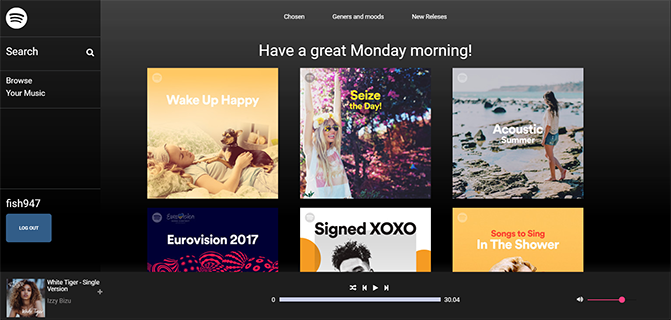

Projects

Spotify Clone
This is a clone of Spotify website and it's Web Player. It uses mostly Angular together with Spotify WebApi. Node and Express are also in use.
Remote Team Projects
Momentum Clone
A remote team project made with Nino_maj and Looly.
React, Redux, Node, Express, MongoDB.
Number's Bot
Remote team project produced together with Asanhix.
Slack Bot made with Node.JS.
Single Page Web Apps
Pinterest Clone
Angular app, with node, express and mongodb in the backend.
Chart the stock Market
Angular app, with express server in the backend.
App uses Quandl API, and SocketIO.
Pokemon Trading Center
Angular app, with node, express and mongodb in the backend.
App uses PokeAPI and SocketIO.
Nightlife Coordination App
Angular app, with node, express and mongodb in the backend.
App uses YealpAPI.
Voting App
Angular app, with node, express and mongodb in the backend.
My first Angular app.
Projekty
Klon Spotify
Klon Spotify Web Player. Aplikacja używa gówłnie Angular. BackEnd zrobiony w Node i Express.
Zdalne Projekty Zespołowe
Klon Momentum
Projekt zespołowy wykonany zdalnie, wspólnie z Nino_maj i Looly.
React, Redux, Node, Express, MongoDB.
Number's Bot
Projekt zespołowy wykonany zdalnie, wspólnie z Asanhix.
Slack Bot wykonany w Node.JS.
Single Page Web Apps
Klon Pinterest
Aplikacja wykonana w Angular. Backend w node, express, oraz mongodb.
Chart the stock Market
Angular, z serverem w express.
Aplikacja używa Quandl API, oraz SocketIO.
Pokemon Trading Center
Aplikacja wykonana w Angular. Backend w node, express, oraz mongodb..
Aplikacja używa PokeAPI and SocketIO.
Nightlife Coordination App
Aplikacja wykonana w Angular. Backend w node, express, oraz mongodb.
Aplikacja używa YealpAPI.
Voting App
Aplikacja wykonana w Angular. Backend w node, express, oraz mongodb.
Moja pierwsza strona wykonana w Angular.